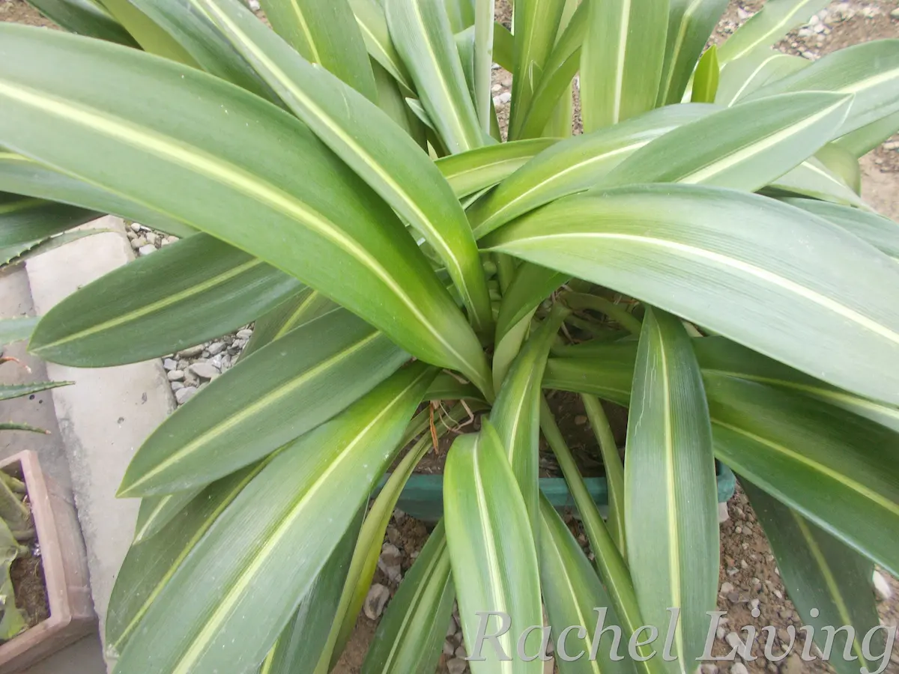
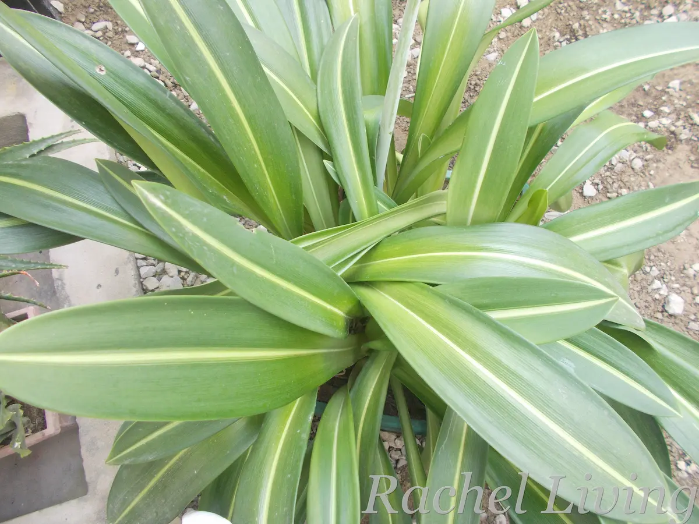
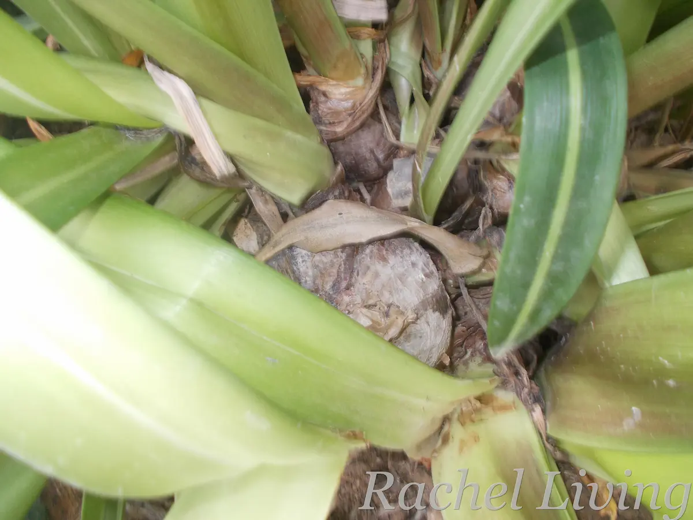

Why This Variegated Hippeastrum Is the Queen of My Garden
I bought this variegated Hippeastrum four years ago from a roadside nursery. At the time, I was experimenting with growing a few unusual plants, but my croton was giving me hell with spider mite infestations. So I was looking for something more resilient.
The nursery owner told me it was a tulip. I remember wondering how a tulip could survive in such a hot place. I’d always thought they needed cold weather. I explained that I wanted a hardy plant, and he assured me this one wouldn’t disappoint.
Somehow, he convinced me to buy two plants that day: the “tulip” and a corn plant. Looking back, I’m especially glad I bought the Hippeastrum.


My Hippeastrums
Why I Love It
I have a green thumb, so I jumped right into caring for my Hippeastrum without really knowing what it was. Its large bulbs told me it needed plenty of room, so I planted it in a spacious container filled with well-draining soil and hoped for the best.
A Tough Plant
It didn’t take long for the plant to win me over. Unlike the corn plant I bought on the same day, which was soon invaded by leafrollers and spider mites, the Hippeastrum never seemed bothered. It simply got on with growing, especially during the rainy season. Four years later, it’s still one of the healthiest plants in my garden.
Foliage That Steals the Show
What I admire most is its foliage. Those long, variegated leaves stay fresh and elegant throughout the year, even during the hottest months. They’re usually the first thing visitors notice when they step into my backyard. Even the exposed bulbs have their own charm, sitting proudly above the soil like oversized shallots.

Beautiful, but Brief
Then there are the flowers. Lovely! They’re what finally convinced me to find out whether my plant was really a tulip or something else. My first search suggested it was a variegated Crinum lily. Later, after I shared photos of it in bloom on the r/VariegatedPlants subreddit, several readers pointed out that it was actually a Hippeastrum reticulatum. So it has been quite the identity journey!
My only complaint is that the flowers don’t stay around for long. Just as I begin to admire them, they’re already fading. I always find myself wishing they would last a few more days.
Hippeastrum flowers
I’ve since learned that Hippeastrums have an interesting history beyond the garden, including compounds that researchers have studied for their medicinal potential. That’s fascinating, but it’s not why I grow mine. For me, this plant has earned its place simply by being beautiful, resilient, and remarkably easy to live with.
Four Years Later
Today, I’m the proud owner of a large, flourishing Hippeastrum. What I thought was a tulip has become the undisputed queen of my garden. I’ve already gifted a few of its bulbs to friends, and I’m thinking of repotting some more this year. When I do, I’ll share the process on my YouTube channel. Until then, happy growing!
My Recommendation: This variegated Hippeastrum isn’t easy to find, but if you’d like to grow one, take a look at Telos Rare Bulbs. They specialize in rare bulbs grown from seed, including Hippeastrum reticulatum.